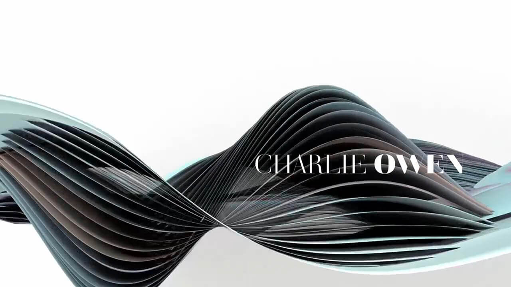
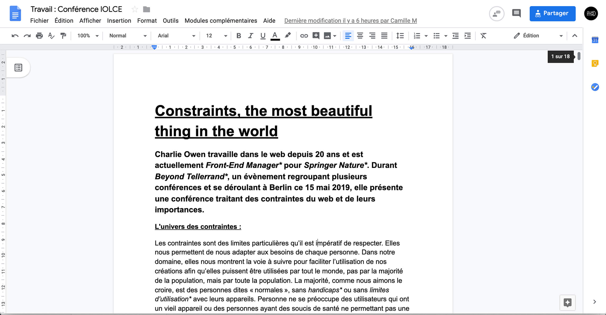
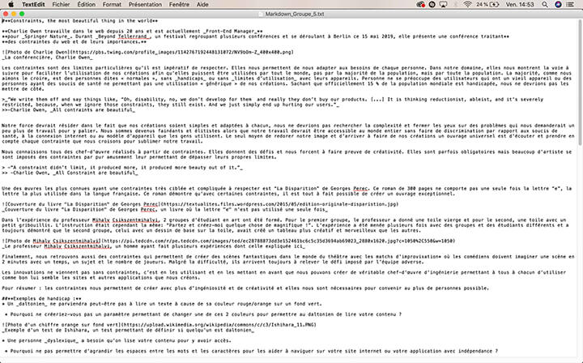
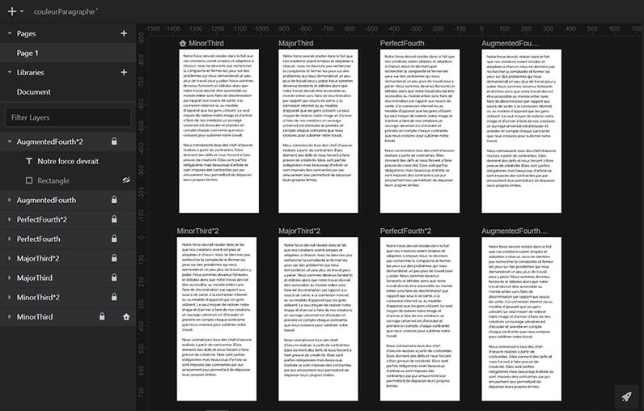
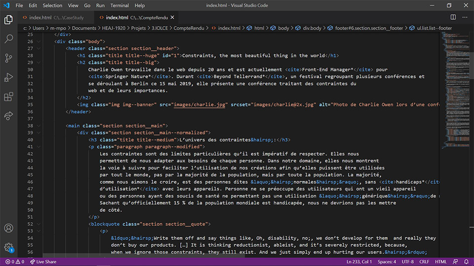
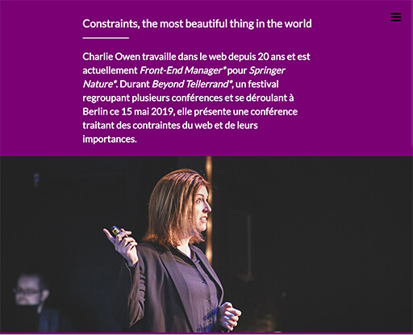

Un projet intéressant
Tout d’abord, nous avons formé des groupes de 4 élèves. Cela ne paraît pas très compliqué de prime abord, quand on est inscrit dans une classe. N’ayant été inscrite dans l’école et donc dans l’option seulement 1 semaine après la rentrée, la formation libre de mon groupe était compromise. Ne connaissant qu’une personne dans ma nouvelle classe, j’ai interpellé le professeur qui avait créé l’atelier afin de trouver un groupe incomplet que je pourrais combler. C’est ainsi que j’ai rejoint un groupe de 3 personnes, amies entre elles, après leur avoir demandé si leur 4ème personne manquait toujours. La réponse était, bien heureusement, affirmative !
Ensuite, nous avons choisis une conférence. Comment l’avons-nous choisi ? Nos professeurs nous ont gracieusement partagé une liste de plusieurs conférences traitant de divers sujets tous reliés à notre option, le monde du Development Web & Mobile. Nous avons regardé les différents résumés des conférences et nous avons votés pour départager les favoris, Charlie Owen et sa conférence « All constraint are beautiful » a remporté le vote et nous nous sommes plongés dans son univers durant 40 minutes. Cela était-il intéressant ? Cela nous a-t-il déçu ?
La rédaction du compte-rendu
Avant de se regrouper pour la première journée de travail, nous nous sommes mis d’accord qu’un résumé personnel de la conférence était une bonne idée. Chacun d’entre nous s’est posé tranquillement chez lui et a visionné plusieurs fois, ou non, la conférence pour en tirer le plus d’informations possible afin de rédiger un résumé clair et complet de notre conférence. Certes un peu courte, j’ai trouvé cette conférence intéressante bien que trop redondante.

Quand le premier jour est arrivé, nous nous sommes regroupés auprès des autres groupes et de nos professeurs afin de rédiger un résumé commun avec l’aide et les conseils de notre professeur référent, du seul professeur qui avait vu notre conférence, du seul professeur… Absent ! Malheureusement, notre cher professeur était malade et il n’a donc pas pu nous faire part de ses précieux conseils et ressentis vis-à-vis de la conférence… Néanmoins, nous nous sommes attardés sur notre résumé et nous l’avons trouvé un peu court. Nous avons donc recherché du contenu avant de le structurer, nous avons donc écris un texte d’introduction, créé un lexique et donné notre avis personnel de la conférence. Le premier jour de travail a été productif malgré tout !
Au deuxième jour, nous avons réfléchi et, malgré tout le respect de nous avons envers notre très cher professeur, nous avons décidé de le déranger durant son rétablissement avec un petit message lui demandant si nous pouvions lui transférer notre résumé commun afin qu’il nous dise ce qu’il en pense. Très compréhensif, il a accepté de le lire et de nous envoyer son avis et ses conseils pour que nous puissions avancer pendant son absence. C’est ainsi qu’il nous a fait remarquer qu’il nous manquait des illustrations dans notre compte-rendu et qu’il fallait encore trouver du contenu pour avoir assez de matière pour travailler par la suite. Nous nous sommes tout naturellement dirigés vers l’idée d’écrire une brève biographie de la conférencière et nous avons aussi eu l’idée de donner des exemples liés au sujet de la conférence, comme les différents handicaps ou les différences technologiques qui posent des contraintes. Finalement, un onglet avec toutes nos sources nous paraissait intéressant et nous l’avons aussi ajouté à notre contenu.
Après une ultime vérification de notre contenu auprès de notre référent, nous nous sommes penchés sur le MarkDown. Au début, cela nous était flou mais nous avons très vite réussis à comprendre cet outil. En fait, le MarkDown est un langage de balisage permettant de formater du texte brut de manière simple pour le rendre en HTML ou dans un autre format. Ce qui en fait un outil très pratique pour avoir une base de HTML correcte pour commencer à coder un site web !
La dernière étape de ce projet était de coder et intégrer un site Web pour poster notre compte-rendu. Nous nous sommes donc séparé et attelé à la tâche après la vérification et la validation de notre MarkDown commun. Chacun était libre de créer son propre design et d’intégrer comme il le voulait tant que le contenu était le même pour tout le groupe.
Coder et designer
Pour débuter, il fallait trouver notre couleur de paragraphe. Cela consiste à prendre un paragraphe de notre contenu et a essayer plusieurs police de caractère avec des longueurs de ligne différentes, des tailles de police différentes et desµ interlignes différents. Mon choix final s’est posé sur la police PlayFair Display avec une taille de 16 pixels, un interlignage de 23, 04 pixels et un rapport hiérarchique de 1.125. Simple mais efficace !
Ensuite, il me fallait créer un rythme vertical, une tâche laborieuse mais essentielle pour trouver l’espacement parfait pour mon contenu ! J’ai utilisé mon rapport hiérarchique pour créer des espaces plus ou moins grands en ayant un rythme strict mais élégant. Tout était enfin prêt pour commencer à designer mon site internet. J’ai repris notre MarkDown pour commencer mon site internet et je me suis vite rendu compte qu’il y avait quelque chose de bizarre. En réalité, le MarkDown nous aide à avoir une certaine hiérarchie mais il n’est absolument pas utilisable comme cela, il n’y a aucune section définie, ni aucune balise HTML utile. Après l’avoir organisé et complété, j’y voyais beaucoup plus clair et j’ai pu commencer à créer mon burger menu et mon design. Pour mon menu, j’ai simplement repris le code que nous avons vu en cours et j’ai utilisé des liens dans ma propre page pour pouvoir y naviguer facilement. Cela ne m’a pas paru très complexe par rapport au design. Ayant des difficultés avec ce dernier, j’ai choisi de créer un CSS assez simple.
Finalement, l’objectif du projet était d’apprendre à travailler en groupe et à rédiger un compte-rendu d’une conférence afin d’analyser une thématique qui est intéressante pour notre option. De notre côté, le travail de groupe s’est bien passé : personne n’a été absent ou très peu, chacun a fait sa part du travail et nous avons toujours fait des compromis quand chacun avait une vision différente du projet. J’ai appris à utiliser un nouvel outil très intéressant durant cet atelier et j’ai pu m’entrainer à faire les différentes démarches pour trouver une couleur de paragraphe qui me convient et un rythme vertical qui tient la route. Ce que je retiendrai de ma conférence, c’est que les contraintes peuvent nous sembler abstraites, bizarres ou inutiles mais la réalité est toute autre. Elles nous sont nécessaires dans notre travail et c’est grâce à elles que nous pouvons créer des sites accessibles à tous.
